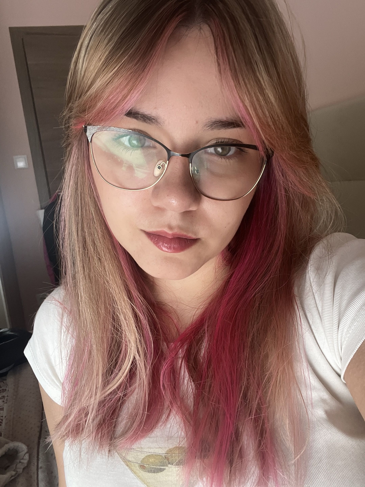
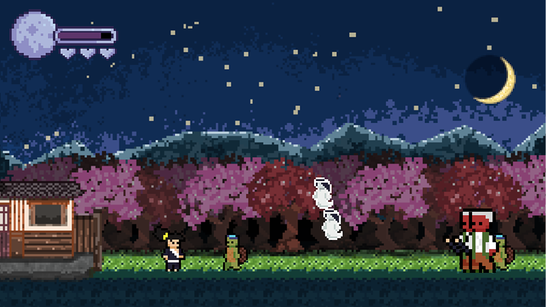
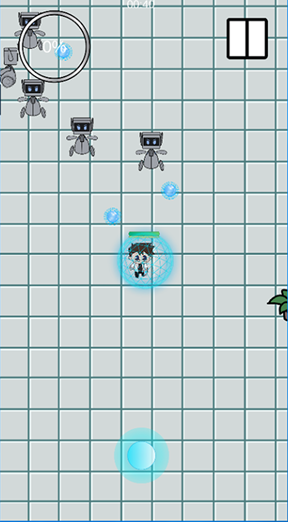
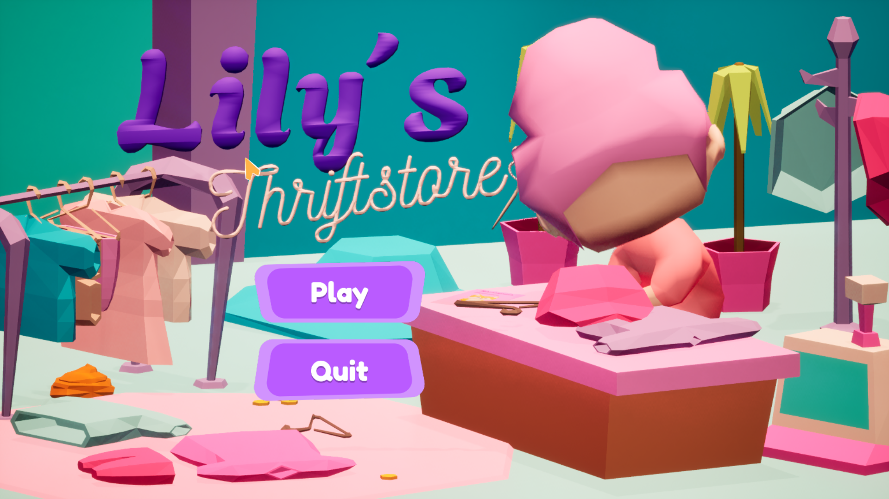
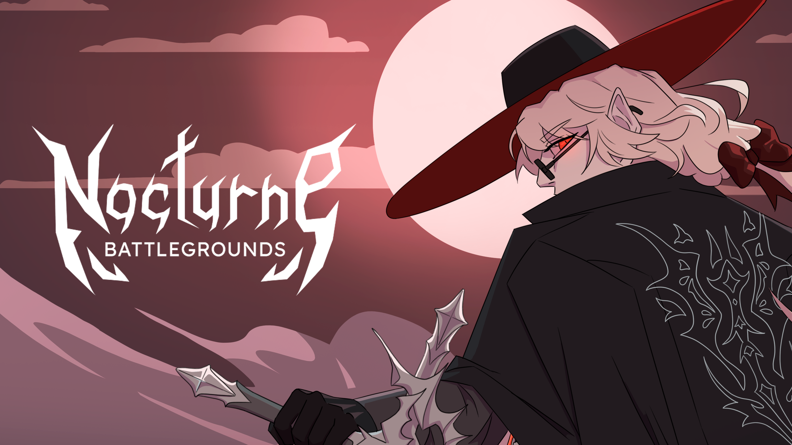
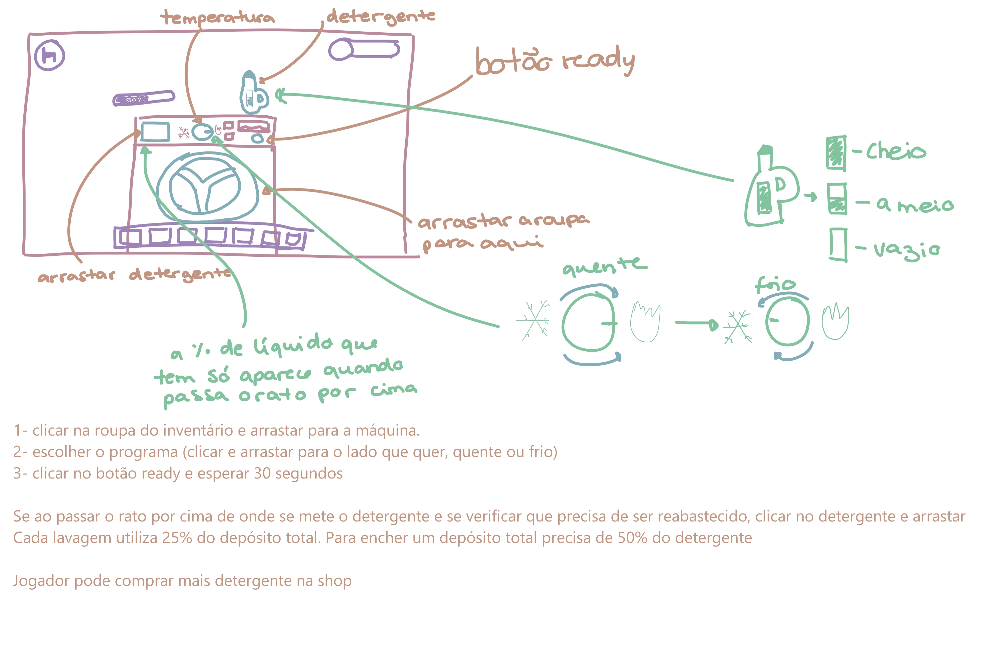
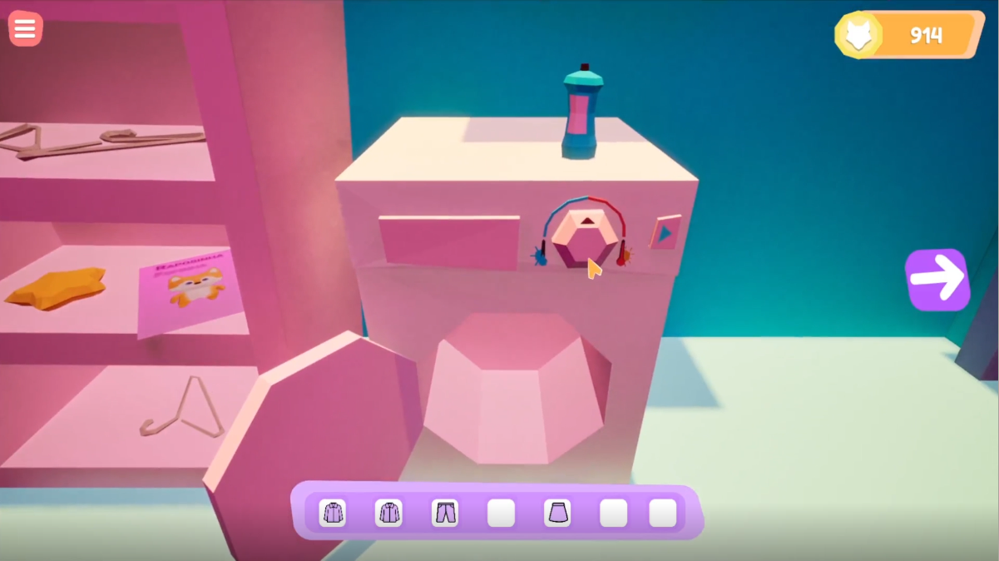
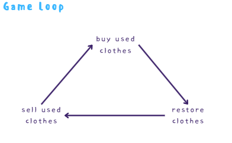

hi! welcome
to my portfolio!

hi there!
I’m Adriana Ferreira, a game designer based in Porto, Portugal. Currently a Videogames student. I’ve worked on a narrative-driven game, mobile roguelike, 2D platformer, cozy simulator and more but I’m always up for exploring new genres and experimenting with fresh ideas. Curently working on a vampire themed roblox battleground.
my education!
2023 - present
Degree in Videogames and Multimedia Aplications – ULP (Universidade Lusófona do Porto)
contact me!
email- adriana.ferreira2005@gmail.com
Tsukuyomi
2D platformer

CyberEngineer
Mobile roguelike game

Lily's Thriftstore
Cozy Thriftstore simulator

Nocturne Battlegrounds
Vampire-themed Roblox Battlegrounds

Tsukuyomi
Developed in just one week by a team of three, this project focused on non-verbal storytelling, conveying a narrative entirely through gameplay and visuals. Beyond my role as Game Designer, where I created a wave system synchronized with lunar phases, I also handled the art direction for characters, enemies, and the UI. Despite the short timeframe, this project significantly sharpened my ability to iterate quickly and communicate complex emotions without the use of dialogue.
CyberEngineer
Developed over three months in a 4-person team, this project served as my introduction to large-scale academic game development, where I spearheaded the Game Design, Level Design, and UX. I was responsible for enemy design and the creation of 30 upgrades, categorized by Character, Weapon, and Gadgets, featuring unique, stackable, and temporary mechanics. Although it remains a prototype, the intensive research and teamwork involved were fundamental in refining my approach to game design.
Lily's Thriftstore
This academic project began when my original pitch was selected for development by a four-person team over the course of a semester. Serving as the Game Designer, I spearheaded the gamification of core mechanics, such as laundry and sewing, and engineered the clothing grading system, game economy, inventory, and player movement.


On top of the design work, I wrote the Game Design Document (GDD) from scratch. While the game remains an unfinished prototype, it served as our debut into 3D development. It was a pivotal learning experience that taught us the importance of scoping, task prioritization, and time management within a production pipeline.

Nocturne Battlegrounds
Nocturne Battlegrounds is my final degree project, a two-semester undertaking (Sept 2025 – June 2026) developed by a team of six. We decided to take a chance and make a game on Roblox because of the ease of publishing games, despite the limitations.
As the lead designer, I architected the core combat system and a dynamic, destructible map environment. I was responsible for the full design of three character kits (two currently in game). Currently, I am spearheading the game’s marketing strategy while maintaining a data-driven approach to balancing, using QA feedback to iterate on combat mechanics.